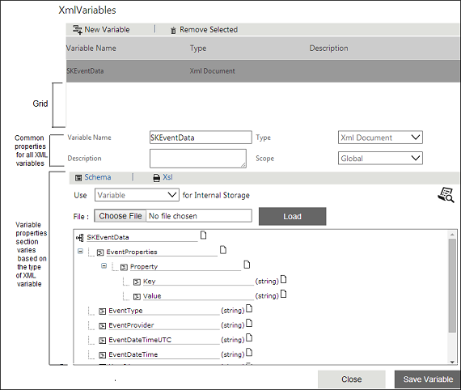

No
The XML Variable User Interface is for configuring XML Variables. This window is opened when you click the XMLVariables property of the Start activity. All XML Variables added for the workflow are displayed in rows in the grid. The variable properties that are specific to a XMLVariable are displayed in the Variable Properties section for an XML Variable.
XML Variable User Interface

Common Properties Available for All XML Variables
The following properties are common for all XML Variables:
XML Variable Property |
Description |
|
Variable Name |
This property is used to specify the name of the variable. |
|
Type |
This property specifies the type of the XML Variable. The available XML Variable types are XML Document, XML SAPTable, XML ListIterator, XML List and XML Iterator. |
|
Description |
This property specifies the description of the XML Variable |
|
Scope |
Global |
If the XML Variable is of Global scope, then you have to set the value of this field as Global for the variable. Where that variable can be used anywhere in that workflow instance. |
Local |
If the XML Variable is of Local scope then the value of the variable is local to a workflow instance. |
|